中世纪银城 库特纳霍拉
2020/5/20 22:07:40
详细介绍
在布拉格以东70公里处有一个迷人的中世纪小镇，常被称为“KH小镇”，捷克语Kutná Hora，中文翻译“库特纳霍拉”。它是中世纪最重要的捷克王室城镇之一，大约有21000个居民。1995年，库特纳霍拉被联合国教科文组织列入世界文化遗产名录。1142年西多会教士在现今该城区域内的一处建立了一座修道院。Kuttenberg（库滕贝格）本意为‘僧袍山’，传说一位修士在葡萄坡上发现银矿石，脱下自己的僧袍为记号，该城由此得名。
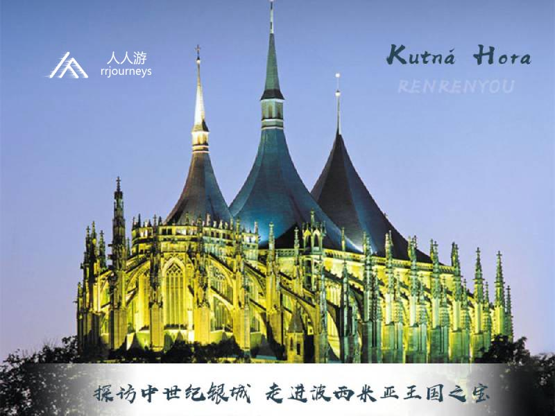
小镇因开采银矿而促进波希米亚王国的发展，因此有“中世纪银城”之称，也是“波希米亚王国之宝”。13世纪期间，库特纳霍拉发展成为仅次于布拉格的第二大波希米亚城市，后期因胡斯战争而遭受严重的破坏。小镇上街巷阡陌、各房阁楼及教堂均充满重大事件悠久历史之气息，许多世人慕名而来的人骨教堂和绝无仅有的晚期哥特式圣巴巴拉教堂建筑为库特纳霍拉的闻名于世的象征。
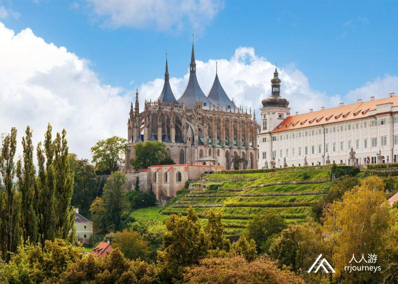
景点：圣芭芭拉教堂
圣芭芭拉教堂被誉为欧洲最美丽的哥特式教堂，教堂里如万花筒般的美丽穹顶，让你感觉仿佛与世隔绝。就算你见过巴黎圣母院、科隆大教堂，但是来到这你也会叹为观止，14扇精美的大彩窗让你一饱眼福，值得一提的是，这些彩窗并不是用玻璃马赛克拼就而成，而是直接画在玻璃上的油彩画。这座高耸的哥特式建筑象征着这座矿山之城的权利和重要地位，因为这里的银矿有大量银储备，这座教堂便成为了给矿工守护神-圣芭芭拉的献礼。整座教堂历时五百年才竣工。
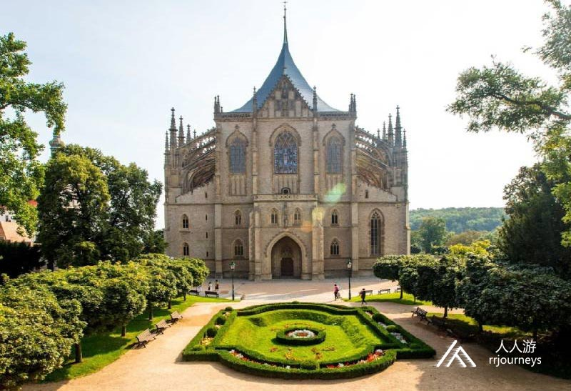
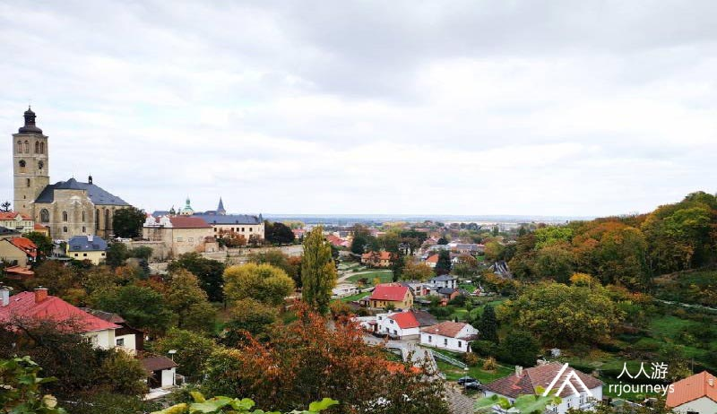
景点：圣芭芭拉街
从圣芭芭拉大教堂走出来，便到了圣芭芭拉街，这里做为拍照的网红场所，是你不得不打卡的地方，背景是哥特式顶峰时期别具一格的教堂建筑，露台边是高大的雕塑，纵深感的视觉提升了画面的立体与饱和度，带条纱裙，绝对是婚纱大片的理想之处。从这里俯瞰库特纳霍拉小全貌，伴着和煦的风，仿佛走进了另一个童话世界。

景点：人骨教堂
在离小镇中央火车站不远处有个外观看起来挺普通的巴洛克教堂，而这教堂就是成千上万人慕名而来的网红人骨教堂，它的独特精彩场景为世人一眼相中。“人骨教堂”听起来好瘆人对吧？是的，你没猜错，它就是真人骨头装饰的教堂，从16世纪起，内部装饰全是由10-50岁的成年男子的骨头堆砌而成的。人那些屋顶上挂满的颅骨，陈列着的精美的吊灯、烛台、牌匾、酒杯、十字架等，而当你真正踏入时，并不是恐惧，而是在这强劲的视觉冲击下，对生命的敬畏情愫油然而生。
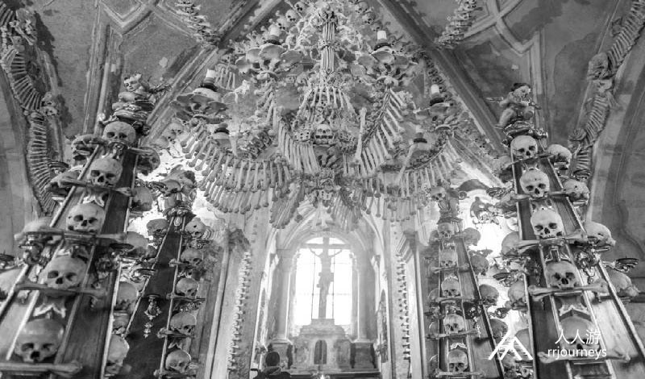
景点：圣母玛利亚和圣洗者约翰升天教堂
和人骨教堂相距大约500米之处便是圣母玛利亚和圣洗者约翰升天教堂，它被列入了联合国教科文组织的世界文化遗产名录。建于1282年至1320年，平面结构包括回廊和几个小礼拜堂围绕着主殿而构成的环形。教堂在胡斯战争期间（1419—1434年）烧毁，后于18世纪初重新建设。“
（知识小灶-胡斯战争：捷克农民战争，时间是1419—1434年，它是欧洲历史上时间较长、影响深远的一次农民战争。这次战争以捷克民族英雄胡斯的宗教改革为旗帜，以胡斯党人为领导，所以称胡斯战争。）
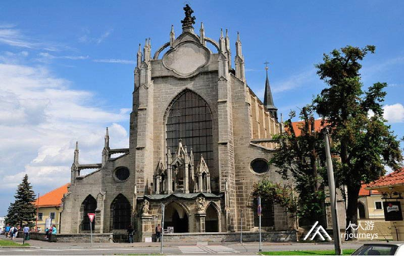
景点：意大利宫Italian Court
意大利宫是一幢复杂的哥特式建筑庭院，在许多世纪中，这里曾是国家经济中心，它包含了皇家造币厂，以及一个波西米亚君王的临时行宫，它有护城河与城市隔开。到13世纪后期，它承担着城堡、银矿石仓库和防御工事的功能。1770年大火后，皇家造币厂迁走，市政厅迁入意大利宫，当你到达这里时，首先映入眼帘的是满满一片墙的爬山虎，它让这座建筑充满了浓浓的历史感。
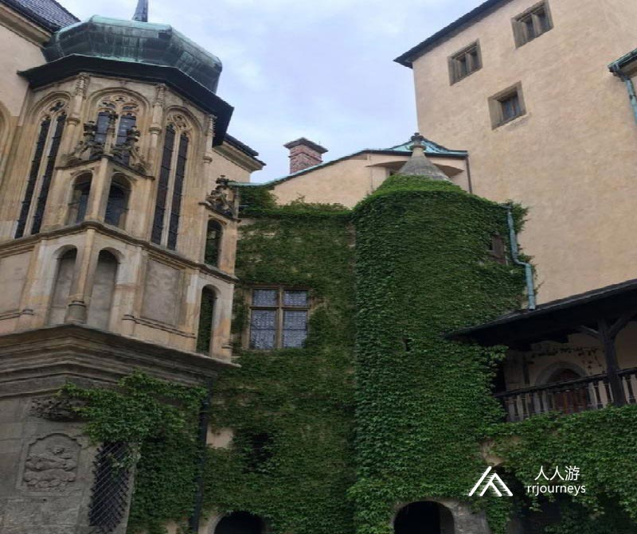
景点：泰尔故居
约瑟夫·卡耶丹·泰尔是著名捷克作家与剧作家，也是一名新闻记者，是捷克国歌作者，他主办的文学杂志《花朵》对捷克青年作家起了重要作用。他于1808年2月4日出生于库特纳霍拉。本馆为其故居，是库特纳霍拉地区博物馆分馆之一，除泰尔生平事迹外，还介绍了库特纳霍拉的银矿开采工艺。

景点：捷克银矿博物馆
这里本是15世纪的王宫，浓缩着曾经库特纳霍拉的辉煌，如今它已演变成一个博物馆，除了展出当年波西米亚王国的财富之源外，来这里参观的游人还可以带上头盔进入500米深的中世纪矿井，深度探寻当年的“银路游”。
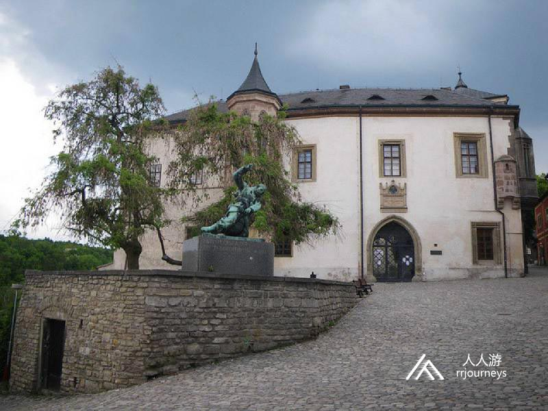
景点：哥特石喷泉
这座建于15世纪哥特式风格的喷泉，是由建筑师Matya Rejsek设计修建。喷泉曾经是一个公共的蓄水池，可以通过侧面的出水口为周边居民提供饮水。因喷泉外部花纹雕饰，靓丽新颖别致而吸引许多游客来此打卡。
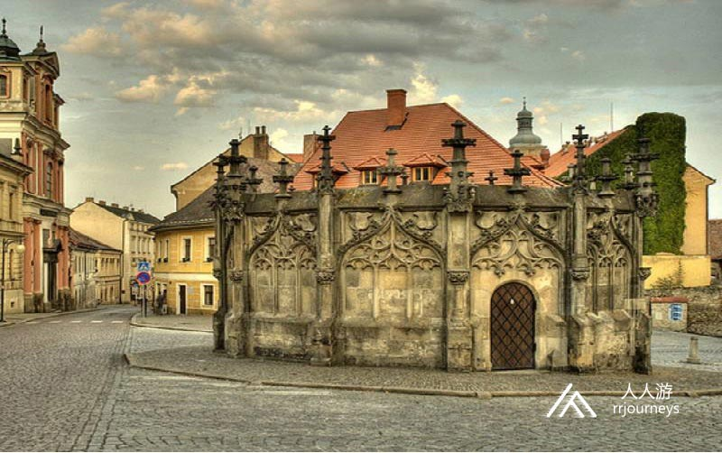
美食：Restaurant Dačický
旅行中的美食是最不可或缺的，这家隐藏在库特纳霍拉的时尚老捷克餐厅更是不能错过。外观看似一家古老的波西米亚小酒馆，它是以库特纳霍拉（KutnáHora）光荣时期的著名人物Dačický命名的餐厅，Dačický餐厅提供古老传统的捷克菜系，拥有波希米亚老特色美食和独特炼金菜单，并提供当地独特的捷克啤酒。
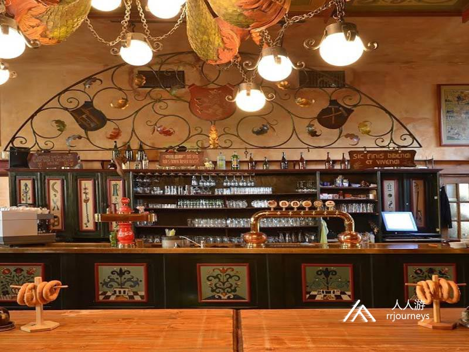
美食：Staročeská restaurace V Ruthardce
它坐落在15号房子，相传最初是牧师的家，哥特式的入口，巴洛克的装修，餐厅拥有一个美丽的花园，从餐厅的花园可以瞭望到库特纳霍拉最美的风景，您可以一边欣赏圣芭芭拉教堂的风光，一边品尝当地的美食，是不可多得之选。餐厅主要以烤特色菜为主，推荐蜂蜜猪排或steak牛排。
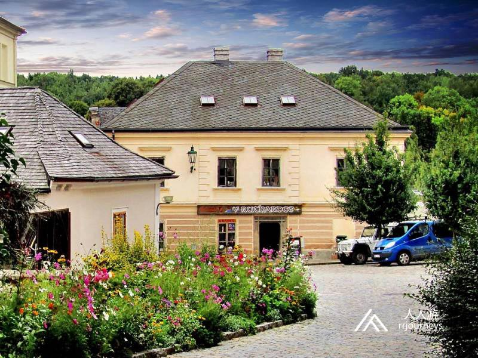